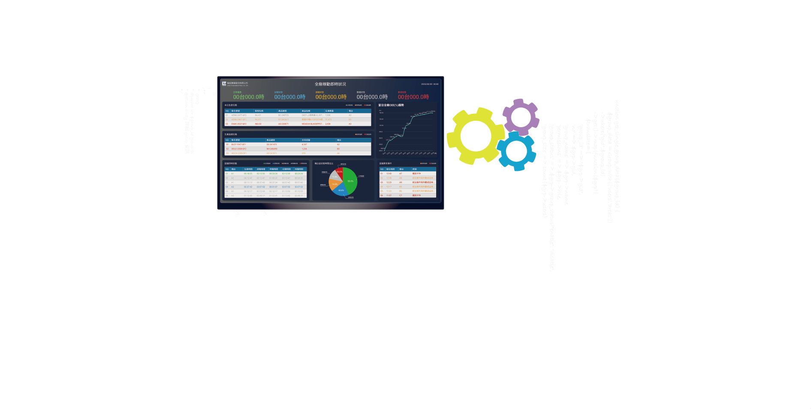
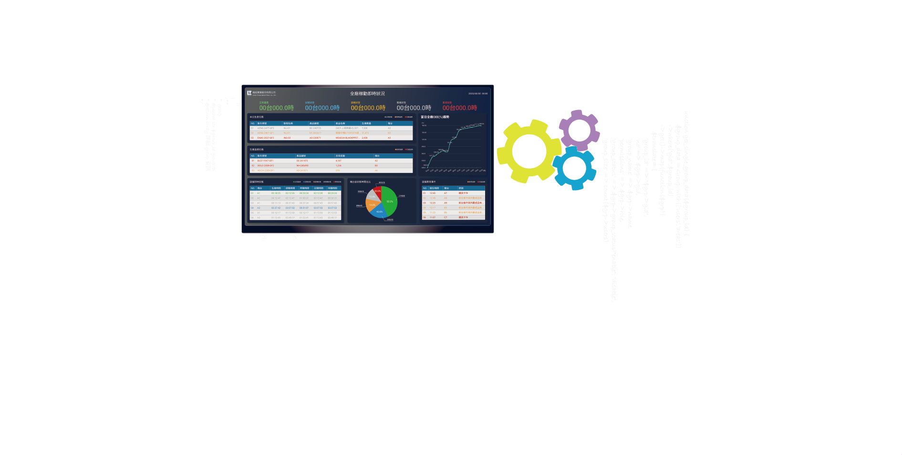

Plastic Injection VS Production situation
In recent years, due to factors such as the trade war between the United States and China and the COVID-19 pandemic, Taiwan has also benefited from some favorable conditions. We have collaborated with a plastic injection factory to customize a real-time information system based on their production line requirements.
We integrate the necessary control information and divide it into four categories, which are displayed in the production management department's situation room and on-site. This allows production and quality control inspectors and on-site supervisors to understand the status of each machine in the production line at any time.
Our partners
We have an excellent product manager, a imaginative UI/UX designer, a creative front-end engineer, and a logical and meticulous back-end engineer.
As a UI/UX designer, I am responsible for conducting user interviews, designing user flows, creating interfaces, conducting usability testing, and gathering feedback.